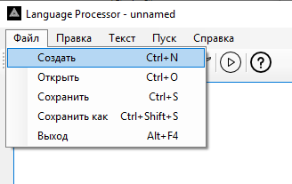
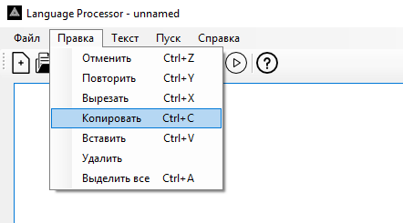
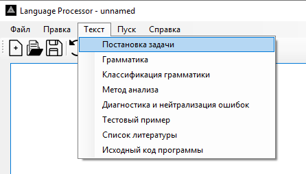
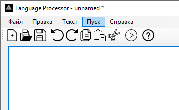
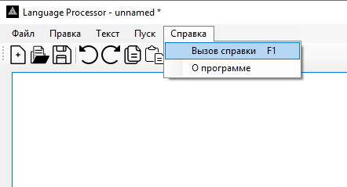
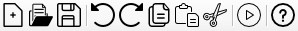

Описание функций текстового редактора
Навигация
Файл:
- Создать (Create) - создание нового документа (Ctrl+N)
- Открыть (Open) - открытие документа (Ctrl+O)
- Сохранить (Save) - сохранение документа (Ctrl+S)
- Сохранить как (Save as) - сохранение нового документа (Ctrl+Shift+S)
- Выход (Exit) - закрытие редактора (Alt+F4)

Правка:
- Отменить (Undo) - отмена последнего действия (Ctrl+Z)
- Повторить (Redo) - повторение последнего действия (Ctrl+Y)
- Вырезать (Cut) - помещение выделенного фрагмента в буфер обмена и удаление его из документа (Ctrl+X)
- Копировать (Copy) - помещение выделенного фрагмента в буфер обмена (Ctrl+C)
- Вставить (Paste) - вставка фрагмента из буфера обмена (Alt+V)
- Удалить (Delete) - удаление фрагмента
- Выделить всё (Select all) - выделение всего содержимого (Ctrl+A)

Текст:
- Постановка задачи
- Грамматика
- Классификация грамматики
- Метод анализа
- Диагностика и нейтрализация ошибок
- Тестовый пример
- Список литературы
- Исходный код программы

Пуск - запуск программы

Справка:
- Вызов справки (F1)
- О программе

- Создать (Create)
- Открыть (Open)
- Сохранить (Save)
- Отменить (Undo)
- Повторить (Redo)
- Копировать (Copy)
- Вставить (Paste)
- Вырезать (Cut)
- Пуск (Start)
- Справка (Help)
